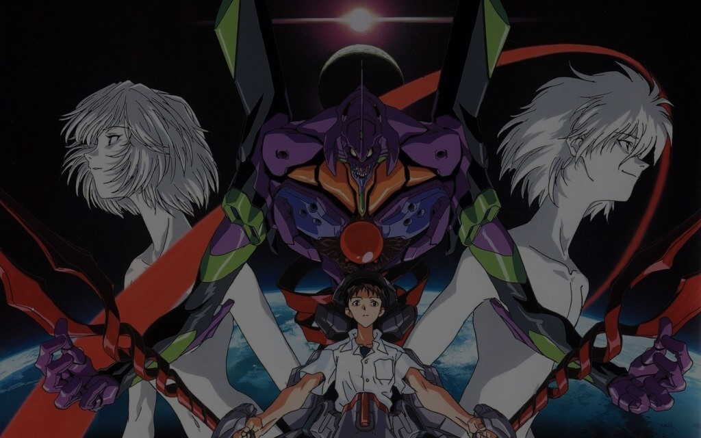
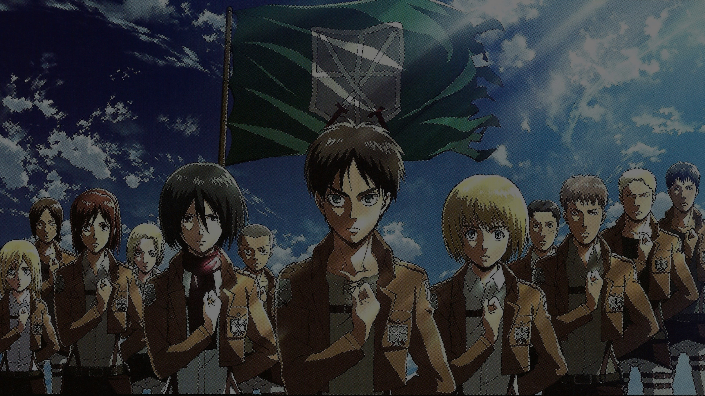
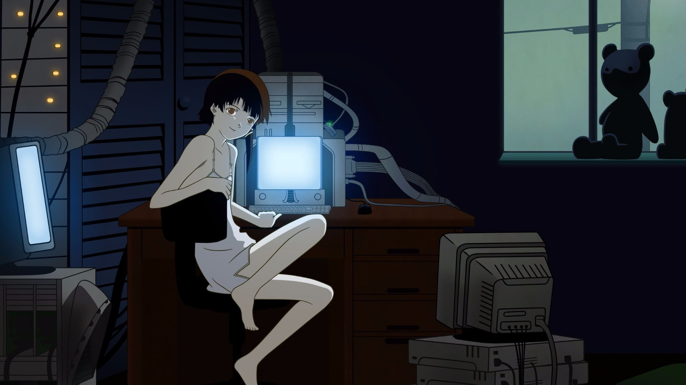
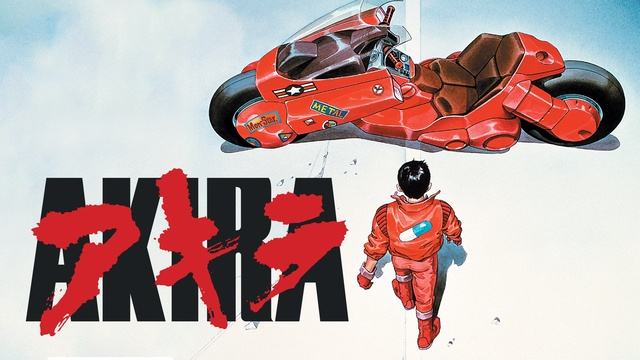
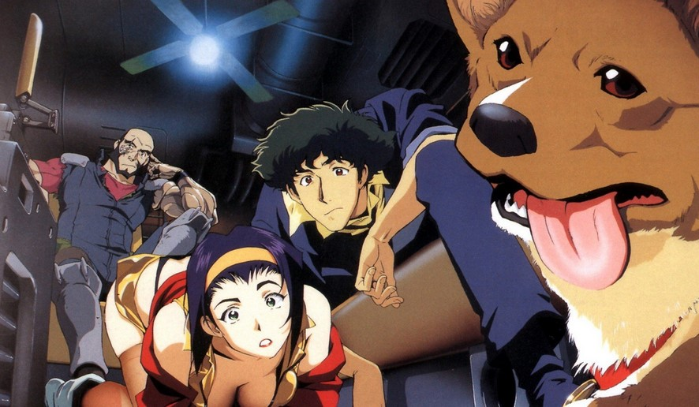

GeekHub
Início
Filmes e Séries
Animes
HQ e Livros
Jogos
Animes

Novo Filme de Evangelion Revela Plano dos Anjos para Invadir a Terra... com Abraços!
Fuga Épica de Creche Inspirada em "The Promised Neverland" - Crianças Constróem Túnel Subterrâneo para Escapar da Hora da Soneca!

Equipe de Rugby Decide Usar Táticas de "Attack on Titan" para o Próximo Jogo - Jogadores Vestirão Capas e Correrão em Formação de Titan!

Estúdio Anuncia Lançamento de "Serial Experiments Lain: A Comédia Musical" para Surpresa dos Fãs

Caos nas Ruas: Fãs de "Akira" Recriam Moto de Kaneda e Assustam Moradores Locais com Corridas Noturnas!

Bebop Burgers: Restaurante Inspirado em "Cowboy Bebop" Abre suas Portas com Hambúrgueres Temáticos e Performances de Jazz!